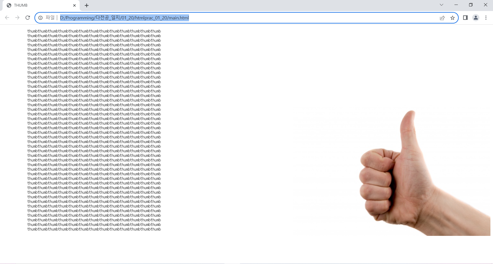

documents
인트로
안녕하십니까. 경희대학교 정보전자신소재공학과 23학번 정우진입니다.
이 웹사이트는 소프트웨어융합학과 및 컴퓨터 공학과 복수전공을 위한 사이트로, 개인적 목적으로 제작된 사이트입니다.
이 사이트에 포함된 모든 사진의 저작권은 저 또는 제 3자에 있으므로 함부로 도용을 금지합니다.
이 사이트의 소스코드는 공개되어있으나, 상업적 목적으로 도용하는 것은 허가하지 않습니다. 다른 목적으로는 편히 이용하셔도 됩니다.
제 활동을 확인하러 오신 교수님 중 한 분이라면 편하게 머물다 가시기 바랍니다.
들어가기 앞서...
지난 학기 이성원 교수님의 웹파이썬 강좌를 수강했다.
교수님께서 보실 이 글에 쓰기 좀 쑥쓰럽지만
매주 올라오는 교수님의 두 강의는 내 22학점 시간표의 오아시스였다.
팀플 네 개를 병행하며
진짜 안좋은 의미로 "각양각색의" 사람을 만났기 때문이다.
그래서 그렇기도 하고, 또 교수님 강의력이 워낙 좋으셔서 수업이 머리에 쏙쏙 들어왔다. 매주 수업 시간이 되면 책상 앞에 앉아 기대되는 마음으로 책상에 앉아 '오늘은 어떤 것들을 배우고 그걸로 무엇을 만들 수 있을까?'라고 생각할 수 있었던 수업이었다.
어쨌든 그렇게 종강하고 2주 정도 여유를 가지며 생각했다.
"이렇게 배운 파이썬, 여기서 끝낼 것인가?"
"나는 성적 때문에 어쩔 수 없이 내 과로 왔지만 원래 꿈은 프로그래머였다. 그 꿈을 이룰 수 있지 않을까?"
"나는 열심히 공부해서 웹파이썬 만점을 받았다. 물론 비전공자 반이라 좀 쉬웠던 것도 있지만 소질도 좀 있는 것은 아닐까?"
"나는 늙어서 '이때 이랬으면...'하고 후회하기 싫다. 그럼 뭘 해야 할까? 내 능력으로 사람들을 도울 수 있으면 어떨까? 그 능력이 프로그래밍이라면?"
"그래, 솔직히 말해서 내가 프로그래밍에 소질이 있는지는 아직 잘 모르겠다. 그렇지만 배운다면 누구보다도 열심히 할 자신이 있다. 소프트웨어융합대학으로 다전공을 하는 것은 어떨까?
그렇게 만든 포트폴리오가 이 웹사이트다. (물론 이 글을 작성하는 시점에는 python이 아닌 프론트엔드를 배우고 있었지만 말이다.)
원래는 계획 짜주는 웹과 게임을 만들어 포트폴리오로 제출하고자 하였다.
그런데 이때 간과한게 Javascript를 python으로 대체할 수 있는 줄 알았다. CSS도 알고는 있었지만 "꼭 필요한가?"라고 생각했다. 그렇게 아무것도 모르고 django를 시작했으니 당연히 이해를 못한다.
그렇게 3일 정도 방황하다 CSS와 Javascript가 꼭 필요하다고 생각했고 빠르게 프론트엔드를 배우는 것으로 방향을 전환했다. 그리고 그 학습일지를 웹사이트로 만들어 호스트 하도록 계획했다.
그 뒤에는 pygame과 같은 프로젝트를 진행하여 여기다 올려보려고 한다.
CSS란?
•CSS: Cascading Style Sheet
HTML이 웹페이지를 만드는데 쓰이는 표준 마크업 언어였다면 CSS는 그 HTML을 더 보기 좋게 디자인한다.
CSS Syntax
•CSS의 표현 방식
CSS는 다음과 같이 표현한다.
selector {
property: value;
property: value;
property: value;
}
여기서 selector는 element의 이름이거나 (즉 <p>의 p, <h1>의 h1 등) class Atrribute와 Id Attribute에서 설정한 클래스와 아이디이다.
property는 내가 설정하고 싶은 스타일을 의미하고 value는 그 값을 의미한다.
CSS에서 어떻게 element를 선택할까?
Selector를 이용한다. Selector는 그 이름대로 element를 선택한다.
•Selector의 종류
Selector의 종류에는 다음 다섯가지가 있다.
- Simple Selector: 태그 이름, 클래스, 아이디를 통해 element를 선택한다.
- Combinator Selector: element의 관계를 통해 선택한다.
- Pseudo-Class Selector: element의 상태를 통해 선택한다.
- Pseudo-Element Selector: element의 일부분만 선택하는 selector이다.
- Attribute Selector: element의 attribute나 그 값을 통해 선택하는 selector이다.
CSS를 HTML에 추가하는 방법
CSS를 추가하는 방법에는 세가지가 있다.
- Inline CSS: element내에 style Attribute로 직접 스타일을 추가하는 방식이다.
element 하나하나 다 해주어야 한다는 번거로움이 있다. - Internal CSS: head 영역에 <style> element로 설정한다.
- External CSS: CSS파일을 따로 만들어 html과 연결한다.
CSS파일과 HTML을 어떻게 연결할까?
<link> 를 <head>영역에 추가한다.
예:
<link rel=”stylesheet” href=”파일경로”>
여기서 stylesheet의 의미는 href의 그 파일이 CSS 파일이라는 것을 나타낸다.
CSS Comments
•주석
HTML처럼 CSS에도 주석을 달 수 있다. 다음과 같이 사용한다.
/*내용*/
여러 줄이어도 같은 방식으로 할 수 있다.
/*내용
내용
내용
*/
CSS Colors
•Predefined Colors
CSS에는 이미 그 값이 정의돼 있는 색들이 있다. red, orange, tomato, skyblue, lightgreen, yellowgreen, grey 등이 있다. (총 140가지)
•RGB(A)
RGB는 각각 Red, Green, Blue 의 약자다. 각 값을 0부터 255까지의 수로 나타내며, 숫자가 클수록 해당 색의 비중이 증가한다.
0,0,0은 검정, 255,255,255는 하양이다. 255,0,0은 빨강, 0,255,0은 초록, 0,0,255는 파랑이다. 255,255,0은 초록이다.
이런 방식으로 색을 조합해 다양한 색을 만들어낸다.
A(lpha)는 opacity, 즉 불투명성을 의미한다. 숫자가 클수록 선명하고, 작을수록 투명해진다.
퍼센트로 나타내므로 0부터 1사이의 값 또는 0%부터 100% 사이의 값으로 나타난다.
•HEX
HEX는 #RRGGBB이다. 즉 rgb처럼 RR의 값이 클수록 빨간색의 비중이 커진다.
일반 숫자와 다르게 여기서 수는 0,1,2,3,4,5,6,7,8,9,a,b,c,d,e,f로 0이 최소 f가 최대이다.
생각해보면 16 x 16= 256으로 나타낼 수 있는 색의 가짓수는 RGB와 거의 같다.
•HSL(A)
각 글자는 Hue, Saturation, Lightness의 약자이다. hue 색상을 의미하며, 0(빨강)을 시작으로 120(초록), 240(파랑), 360(빨강)을 나타낸다.
Saturation은 채도를 의미한다. 0에 가까울수록 회색에 가까워진다. 퍼센트 값으로 나타낸다.
Lightness는 명도다. 0에 가까울수록 검은색이 된다. 마찬가지로 퍼센트 값으로 나타낸다.
A(lpha)의 의미는 RGBA에서의 A와 같다.
배우기 전: 지난 시간까지 CSS의 기초 이론을 학습했다. 오늘부터는 실제로 HTML파일에 CSS를 적용하며 element가 어떻게 바뀌고 스타일 되는지 배울 예정이다.
배운 후: 전에는 일반적인 글처럼 모든 element가 왼쪽에 배치되었다면 이제는 border와 background로 꾸미고 padding과 margin으로 배치를 바꿀 수 있게 되어 더욱 생동감 있게 느껴진다.
CSS Background
•배경
모든 HTML element는 배경을 가진다.
배경은 다음 5가지 속성을 가질 수 있다.
- (1) Background Color
- 말 그대로 배경의 색을 정할 수 있다. 다음과 같이 사용한다.
- red 대신 앞서 배운 RGB(A), HSL(A), HEX를 넣을 수도 있다.
- (2) Background Image
- 말 그대로 배경에 이미지를 추가할 수 있다. 다음과 같이 사용한다.
- 여기서, 앞으로 CSS에서 value로 쓰이는 파일경로는 url(“파일경로”)로 작성한다.
- 파일경로 작성법은 HTML File Path와 같다. png, gif, jpg 모두 가능하다.
- (3) Background Repeat
- Background Image를 추가하면 세로 및 가로 방향으로 반복되는 것이 기본 값(default)이다.
- 즉 이 배경 반복 여부를 결정하는 속성이다. 다음과 같이 사용한다.
- (4) Background Position
- 배경 이미지가 어디에 위치할지 결정하는 속성이다. 다음과 같이 사용한다.
- 왼쪽은 left, 아래는 bottom으로 쓴다. 
- 그림처럼 top/bottomleft/right의 순서는 바뀌어도 상관없다.
- (5) Background Attachment
- 배경 이미지가 스크롤 했을 때 그 자리에 고정되어 있을지, 같이 따라 내려올지 결정하는 속성이다. 다음과 같이 사용한다.
- (6)Background Shorthand
- 앞서 배운 것들을 하나의 “background” 속성으로 전부 나타낼 수 있다.
- 순서는 background color, image, repeat, attachment, position이다.
- 예를 들어 다음과 같이 나타낸다.
p {
background-color:red;
}
p {
background-image:url(“파일경로”)
}
p {
background-image:url(“파일경로”) /*이미지 파일*/
background-repeat:no-repeat; /*반복 없음*/
background-repeat:repeat-x; /*x축 반복*/
background-repeat:repeat-y; /*y축 반복*/
}
p {
background-image:url(“파일경로”) /*이미지 파일*/
background-repeat:no-repeat; /*반복 없음*/
background-postion: right top; /*오른쪽 위*/
}
p {
background-image:url(“파일경로”) /*이미지 파일*/
background-repeat:no-repeat; /*반복 없음*/
background-attachment: fixed /*고정, 그 자리에 남아있음*/
background-attachment: scroll /*스크롤, 따라 내려옴.*/
}
background:hsla(0,1,1,0.5) url(“thumb.jpg”) no-repeat scroll bottom right
CSS Border
•테두리
모서리 부분을 꾸미는 속성이다. 모든 element가 이 속성을 가질 수 있다. 다음 3가지 속성이 있다.
- (1) Border Style
- Border의 스타일을 결정하는 속성이다. 다음 종류가 있다.
- solid 직선
- dotted 점선
- dashed 점선과 비슷한데, 점선보다 선의 길이가 좀 더 길다.
- groove 생략
- ridge 생략
- inset 생략
- outset 생략
- none 없음
- hidden 숨김 (있지만 안보임.)
- 다음과 같이 사용한다.
- (2) Border Width
- 모서리 두께를 설정하는 속성이다.
- 선결정된 두께를 사용하는 방식, 내가 구체적인 두께를 설정하는 방식 두가지가 있다.
-
- 선결정된 두께를 사용
border-width:thin or medium or thick; - 구체적인 두께를 설정
border-width:10px;
- 선결정된 두께를 사용
- (3) Border Color
- 모서리 색을 결정하는 속성이다. 다음과 같이 쓴다.
border-color:rgba(0,0,0,0) border-color:transparent- 여기서 transparent는 ‘투명’을 의미한다.
border-style:solid;
•각 모서리를 따로 설정할 수 있을까?
있다. 다음과 같이 사용한다.
border-top-style: dotted;
border-bottom-style: dashed;
border-right-width:5px;
border-left-color:rgba(100,140,120);
다음의 규칙을 따라 더 쉽게 설정할 수도 있다.
-
값이 4개
각각 상,우,좌,하의 속성을 결정한다.
예: border-style:groove dashed solid outset; -
값이 3개
각각 상,좌우,하의 속성을 결정한다.
예: border-width:5px 10px 20px; -
값이 2개
각각 상하,좌우의 속성을 결정한다.
예: border-color: 10px 20px; -
값이 1개
상하좌우 전부를 설정한다.
예: border-style:outset;
•Background Shorthand처럼 Border도 짧게 할 수 있는가?
가능하다. 순서는 width, style(필수), color다.
예: border:4px solid red;
•둥근 모서리
모서리를 둥글게 만들 수도 있다.
border-radius는 모서리(각 꼭지점 부분)의 반지름을 설정한다.
예: border-radius:5px;
참고로, border-radius:50%; 처럼 %도 가능하다. 이 경우 전체를 100%로 가정하고 해당 비율만큼 반지름이 설정된다.
CSS Margins
•마진 (Margin)
Border 밖 다른 element 와의 거리를 설정하는 속성이다. Border와 비슷하게 설정할 수 있다.
value 값은 4가지 값 중 하나를 가질 수 있다.
- 길이: 특정한 길이를 직접 설정 (px, em 등)
- %: 그 element가 들어있는 곳에서의 비율로 설정
- auto: 가운데 정렬 (가능한 영역 내에서)
- inherit: 부모 element와 같은 값을 따라감.
다음과 같이 사용한다.
margin-top:10px;
margin-left:30%;
margin-right:inherit;
margin:auto;
•border와 마찬가지로 더 쉽게 쓸 수 있는가?
그렇다. 이것도 border처럼 값이 하나이냐, 두 개 이냐, 세 개 이냐, 네 개 이냐에 따라 나눌 수 있다. 규칙은 border와 같으므로 생략한다.
예: margin:10px 20px; /*상하 각각 10px, 좌우 각각20px*/
•Margin Collapse
두 element의 Margin이 겹칠 때 일어나는 현상을 의미한다.
예를 들어 A라는 element아래에 B라는 element가 있다고 하자. A의 margin-bottom이 10px이고 B의 margin-top이 30px 이라면 다 합한 40px가 아니라 더 큰 B의 30px만 남고 나머지는 무시된다.
이 현상을 Margin Collapse 이라고 한다.
CSS Padding
•패딩 (Padding)
패딩은 border와 content사이 거리를 뜻한다.
여기서 content는 element에 들어가는 내용, 즉 해당 태그 안에 들어가는 다른 태그나 텍스트를 의미한다.
설정방법이 margin과 같으므로 예시만 제시하겠다.
padding-bottom:10px;
padding:20px 30px;
CSS Width/Height
Height & Width
말 그대로 element의 세로 길이와 가로길이를 설정하는데 쓰인다.
width로 가로길이를, height로 세로길이를 설정한다.
value는 4가지 값 중 하나를 가질 수 있다.
- 길이: 특정한 길이를 직접 설정 (px, em 등)
- %: 그 element가 들어있는 곳에서의 비율로 설정
- auto: 가운데 정렬 (가능한 영역 내에서)
- inherit: 부모 element와 같은 값을 따라감.
단, 여기서 설정하는 가로, 세로길이는 각 element의 content영역이다. (content 영역은 다음 Box Model에서 설명한다.)
CSS Box Model
•Box Model
지금까지 margin, padding, border, content(width & height)를 배우며 element들의 기본 배치구조를 파악했다.
이걸 한 번에 그려 쉽게 알아볼 수 있게 그린게 Box Model이다.
그림은 다음과 같다.
결론적으로, 한 element의 가로 길이는 Box Model에 따라 width 속성으로 설정해준 content영역의 가로길이와,
border-width로 설정해준 border의 두께,
그리고 margin과 padding을 모두 더해주어야 한다.
특히 padding, border, margin의 경우 상하 또는 좌우 한 쌍 씩 합쳐서 계산해주어야한다.
CSS Outline
•Outline
Border 밖을 꾸미기 위해 존재하는 속성이다.
다른 padding, margin과 달리 다른 element에영향을 주지 않는다.
즉 다른 element와 겹칠 수 있다.
다음 속성을 사용한다.
- 1) outline-style
- border-style과 같은 value값들을 사용한다.
- 2) outline-color
- border-color와 같은 값을 사용한다.
- 3) outline-width
- border-width와 같은 값을 사용한다.
- 4) outline-offset
- border와의 거리를 설정하는 속성이다.value는 border-width와 동일하다.
- 5) outline (Shorthand)
- outline-width, outline-style, outline-color의 Shorthand다. outline-style은 필수로 들어가야 한다. border와 같은 순서다.
지난 시간에는 Border, Magin, Padding, Content 네 가지를 배우며 CSS의 기본구조인 Box-Model를 학습할 수 있었다. 드디어 CSS의 구조가 조금씩 보이기 시작했다. 마치 건물의 설계도를 넘겨받은 느낌이다. 오늘도 여러가지를 학습하면서 이런 느낌을 다시 한번 받아보자
CSS Text
•텍스트
텍스트(text)는 CSS에서 매우 큰 비중을 차지한다.
제목이든 내용이든 뭐든 사용자들이 읽는 부분이니 특히 그렇다.
텍스트 디자인이 밋밋하면 사람들이 지루하다고 느끼며 페이지를 방문하지 않고, 폰트가 다른 디자인 요소와 어우러지지 않으면 불쾌감을 느껴 잡(?)사이트라고 생각한다.
나도 전에 쇼핑하면서 만들어지고 업데이트 되지 않은 쇼핑사이트를 여럿 봤는데, 항상 “에이, 구식이네. 신뢰성이 떨어진다.” 라고 말하며 결제를 주저하고 결국 다른 물건을 보러 떠났다.
그럼 이 텍스트를 어떻게 꾸밀 수 있을까?
크게 여섯 가지 영역이 있다.
- Color: 텍스트의 색을 바꾼다.
- Text Alignment: 텍스트의 정렬 방향을 정한다.
- Text Decoration: 텍스트에 긋는 선 종류와 여부, 그리고 그 디자인을 결정하는 속성이다.
- Text Transform: 대문자 소문자와 관련된 것들을 다루는 속성이다.
- Text Spacing: 텍스트 관련 간격에 대한 속성이다.
- Text Shadow: 텍스트의 그림자 효과를 줄 때 사용한다.
하나씩 알아보자.
•Color
텍스트의 색은 다음 속성으로 정한다.
“color:(value)”
앞에서도 말했다시피 background-color나 border-color처럼 앞에 뭐가 붙지 않는다. text-color라고 착각하지 말자.
value는 rgba, hex, hsla로 구체적 값을 설정하거나 predefined 색들을 이용할 수 있다.
•Text Alignment
텍스트의 정렬은 다음 속성들로 정한다.
- 1)“text-align:(value)” : 텍스트의 정렬 방향을 정한다.
- value로는 center, right, left, justify가 들어갈 수 있다.
- justify는 워드에서 ‘양쪽 맞춤’에 해당하는 기능이다.
- 2)“text-align-last:(value)” : 텍스트 ‘마지막 줄’의 정렬 방향을 정한다.
- value는 1)의 value에 들어갈 수 있는 값들과 동일하다.
- 3)“direction”:(value)” + “unicode-bidi:bidi-override” : 텍스트의 작성 방향을 정한다.
- 가끔 문장을 작성하고 역순으로 글자를 배열하고 싶을 때가 있다. 이때 사용한다.
- direction의 value에 들어갈 수 있는 값은 rtl(right to left), ltr(left to right)가 있다. unicode-bidi:bidi-override는 고정이다.
- 4) “vertical-align:(value)” : 텍스트 내부에서 작성위치를 결정한다.
- 무슨말인지 쉽게 설명하면, 위첨자, 아래첨자와 같은 기능을 설정하는 속성이라고 보면 된다.
- value는 baseline(디폴트), text-top, text-bottom, sub, super 네 가지 값이 들어갈 수 있다.
- 각각 기본값, 텍스트 위, 텍스트 아래, 아래첨자, 위첨자를 의미한다.
- 근데 실질적으로 텍스트 위=위첨자 같고 텍스트 아래= 아래첨자 같다. 아마 글자와 이미지의 차이 때문에 나눈 것 같다.
•Text Decoration
텍스트에 어떤 줄을 넣을지, 그 색은 어떻게 할지 등 줄에 관한 속성이다. 다음 다섯가지로 정한다.
- 1) “text-decoration-line: (value)”: 어떤 줄을 넣을지 결정하는 속성
- 다음과 같은 value를 가질 수 있다.
- (1) overline: 윗줄
- (2) underline: 밑줄
- (3) line-through: 취소선
- (4) overline underline: 윗줄 + 밑줄 동시
- 2) “text-decoration-color:(value)” 1)로 결정한 줄의 색을 정하는 속성
- value로 들어갈 수 있는 값은 여타 color 속성들과 같다.
- 3) “text-decoration-style:(value)” 1)로 결정한 줄의 스타일 종류를 정하는 속성
- value로 들어갈 수 있는 값은 border-style과 같다. 단, 물결표시를 주는 ‘wavy’가 추가되었다.
- 4) “text-decoration-thickness:(value)”: 줄의 두께를 결정하는 속성
- 말 그대로다. border-width와 같은 값을 가질 수 있다.
- 5) “text-decoration:(value1) (value2) (value3) (value4)”: 앞서 배운 네가지의 Shorthand다.
- value의 순서는 1), 2), 3), 4) 이다. 다만 1)은 필수고 나머지는 선택적으로 넣을 수도 있고 넣지 않을 수도 있다.
•Text Transformation
대문자, 소문자 관련된 속성이다. 다음 속성을 쓴다.
“text-transform:(value)”
>value 값으로는 uppercase, lowercase, capitalize가 있다.
uppercase는 모든 글자를 대문자로, lowercase는 모든 글자를 소문자로 만든다.
capitalize 는 각 단어의 첫글자만 대문자로 만든다.
•Text Spacing
간격에 대한 기능이다. 다음 속성을 쓴다.
- 1)”text-indent:(value)”
- 텍스트 첫 줄에 들여쓰기를 하기 위해 넣는다. 들여쓰기 크기를 정할 수 있다. value는 border-width와 같은 값이 들어간다.
- 2)”letter-spacing:(value)”
- 글자간 띄어쓰기 간격을 설정하기 위해 넣는다. value에 들어갈 수 있는 값은 1)과 같다. word-spacing과 헷갈리지 말자.
- 3)”line-height:(value)”
- 줄 간격을 설정하기 위해 넣는다. value에 들어갈 수 있는 값은 1)과 같을 수도 있고, %를 설정할 수도 있다. 보통 브라우저 기본값은 110%~120%이다.
- 4)”word-spacing:(value)”
- 단어간 띄어쓰기 간격을 설정하기 위해 넣는다. value에 들어갈 수 있는 값은 1)과 같다. letter-spacing과 헷갈리지 말자.
- 5)”white-space:(value)”
- 긴 글이 한 문단에 들어가 있을 때 스크린 사이즈에 맞게 자동 줄바꿈이 되게 하지 말지 결정하는 속성이다.
- value로는 wrap, nowrap이 들어갈 수 있다. nowrap으로 할 경우 아래 스크롤바가 생기며 좌우로 움직일 수 있다.
- wrap으로 할 경우 생기지 않고 한 화면에서 다 볼 수 있다.
•Text Shadow
텍스트에 그림자를 넣는 기능이다. 다음 속성으로 사용한다.
“text-shadow:(value1) (value2) (value3) (value4)”
value1에 들어가는 값은 수평 방향 위치다. 0은 현재 글자 위치이고, 양수일 경우 오른쪽 음수일 경우 왼쪽으로 움직인다.
value2에 들어가는 값은 수직 방향 위치다. 0은 현재 글자 위치이고, 양수일 경우 아래쪽 음수일 경우 위쪽으로 움직인다.
참고로 value1, value2의 숫자에 따른 방향은 background-position과 같다.
value3에 들어가는 값은 blur효과 양이다. 알아서 적당히 정하자.
value4에 들어가는 값은 색이다. 색상표기법을 이용하거나 predefined 색들을 이용하면 된다.
CSS Fonts
•폰트
폰트도 텍스트와 마찬가지로 매우 큰 역할을 한다.
예를 들어, 리그오브레전드 홈페이지 글이 궁서체로 써있다고 해보자. 만우절도 아니고 분위기가 맞을까? 그렇지 않다.
분위기에 맞는 폰트를 결정하는게 매우 중요하다.
폰트에 관련된 설정들을 배우면서 어떻게 해야 분위기에 맞는 폰트를 설정할 수 있는지 배워보자.
다음 5가지 속성이 있다.
- 1)“font-family:(value)”
- 어떤 폰트를 사용할지 설정하는 속성이다. 한 가지 속성만이 아니라, 대체 속성을 정할 수도 있다. 앞에 올수록 우선 순위가 높다. 앞에 있는게 안될 경우에만 뒤에 것이 사용된다.
- value 값으로 들어갈 수 있는 font는 수없이 많다. sans-serif, serif, Times Roman 등등 이미 포함되어 있는 폰트들도 있고, Google Font API에서 1000개가 넘는 폰트들 중 하나를 골라 사용할 수도 있다.
- Google Font API는 차후 설명하겠다.
- 2) “font-style:(value)”
- 해당 폰트가 어떤 스타일로 사용될지 결정하는 속성이다.
- value로는 normal, italic, oblique가 있다. normal은 디폴트고, italic과 oblique는 다 italic으로 써진다. (italic과 oblique의 차이가 없어 보인다.)
- 3) “font-weight:(value)
- 해당 폰트의 무게감, 즉 볼드처리를 어떻게 할지 결정하는 속성이다.
- value로는 normal, lighter, bold가 들어갈 수 있다. normal은 디폴트 값이고 lighter은 좀 더 얇게 bold는 두껍게 들어간다.
- 숫자도 들어갈 수 있는데, 351~549가 normal 값이다. 그 이하는 lighter로 들어가고 그 이상은 bold로 들어간다. 다만 1000을 초과할 경우 normal 값으로 들어간다.
- 4) “font-variant:(value)”
- 해당 글의 소문자가 대문자화 될지 말지 결정하는 속성이다. text-transform:uppercase와의 차이는, font-variant:small-caps는 원래 대문자는 두껍게, 소문자였던건 얇게 표시된다.
- 앞에 쓴 것 처럼 value는 normal(디폴트), small-caps가 있다.
- 5) “font-size:(value)”
- 해당 글의 글자 크기를 결정하는 속성이다. 단, 이미 <h1> 같이 제목 태그가 있음에도
태그의 글자크기를 조정해서 제목으로 쓰는 것은 좋은 방법이 아니라는 것을 명심하자.
- value로는 px, em, vw등이 들어갈 수 있다.
- 6) “font:(value1) (value2) (value3) (value4) (value5)”
- Shorthand다. 순서는 다음과 같다.
- value1: style
- value2: variant
- value3: weight
- value4: size
- value5: family
- 단, size와 family는 필수로 들어가야 하는 값이다. 어느 하나라도 들어가지 않으면 디폴트 값이 들어간다.
Font Google
Google Font API에서 폰트를 가져올 수도 있다. 다음 방식으로 가져온다.
<link rel="stylesheet" href="https://fonts.googleapis.com/css?family=(폰트이름)">
구글에 Google Font API라 치고 사용하고 싶은 폰트이름만 그대로 적어주면 font-family에 넣어 사용할 수 있다.
여러 개를 넣고 싶은 경우, 폰트이름간 ‘|’ 를 넣어주자. 여러 이펙트도 넣을 수 있는데, 그 경우 (폰트이름)&effect=(이펙트이름) 으로 넣어주면 된다.
폰트 종류와 이펙트는 구글에서 직접 찾아보자.
이번에는 리스트와 테이블처럼 데이터를 나열하는 element들을 어떻게 꾸밀 수 있는지 배울 계획이다. 어떻게 쓰일지 모르겠지만 당장 이렇게 일지를 쓰는데도 리스트가 쓰이므로 확실히 알아두자. Icon과 Link는 건너뛰고 나중에 써야 할 때 보는 것도 괜찮을 것 같아서 건너 뛰었다.
CSS List
•리스트
앞서 HTML에서 배웠다시피, 리스트에는 총 3가지가 있다.
- Unordered List: 순서가 없는 리스트
- Ordered List: 순서가 있는 리스트
- Description List: 설명을 추가하는 리스트
이중 1., 2.가 주로 사용되는 리스트로 이것들의 마커가 올지 설정하거나 그것들의 위치를 조정할 수 있게 만든다.
하나씩 알아보자.
- •"list-style-type"
- 어떤 리스트 마커(기호)를 사용할지 결정하는 속성이다. 다음과 같이 사용한다.
- "list-style-type:(value)"
- value에 들어갈 수 있는 값은 circle, square, upper-roman, lower-roman, upper-alpha, lower-alpha, none이 있다.
- 각각 원, 정사각형, 로마자 대문자, 로마자 소문자, 알파벳 대문자, 알파벳 소문자, 스타일 없음을 나타낸다.
- 원과 정사각형 같은 도형은 Unordered list에 사용되고 none을 제외한 나머지는 Orderded List에 사용된다. none은 마커를 없앨 때 사용한다.
- •"list-style-image"
- 이미지를 리스트 마커로 사용할 수 있는 기능이다. 다음과 같이 사용한다.
- "list-style-image:url(“파일경로”)"
- 파일경로는 앞서 배운 것과 같으므로 생략한다. 파일은PNG, JPEG, GIF모두 가능하다.
- •"list-stylle-position"
- 리스트 마커의 위치를 정할 수 있는 설정이다. 다음과 같이 사용한다.
- “list-style-position:(value)”
- value에 들어갈 수 있는 값은 outside, inside두가지다. outside의 경우 지금 이 일지에 쓰인 것처럼 마커가 있으면 줄이 넘어갈 때 마커가 있는 위치까지 글이 넘어가지 않는다. inside의 경우 넘어간다.
- •"list-style"
- 앞서 배운 것들의 Shorthand이다. 다음과 같이 사용한다.
- “list-style: (value1) (value2) (value3)”
- value1: list-style-type
- value2: list-style-position
- value3: list-style-image
- 만약 어느 하나가 비어있으면, 그 값은 기본 값으로 적용된다.
CSS Table
테이블 만드는데 주로 쓰이는 엑셀을 살펴보면 셀을 선택할 시 색이 짙어진다.
또, 해당 셀 영역의 배경 색을 여러가지 설정할 수 있다. 이런 기능을 가지고 있는 것이 CSS Table이다.
하나씩 알아보자.
•Border
테이블 테두리를 변경하는 기능이다. 자세히 살펴보면 테이블 전체를 감싸는 테두리 하나와 각 데이터(셀)을 감싸는 테두리 여러 개로 이루어져 있는 것을 볼 수 있다.
이것들 모두 ‘border’가 적용된 상태다.
즉 <table>, <th>, <td>,<tr> 모두 테두리 적용이 가능한데, 이 중 <th>, <td>,<table>의 border가 설정되어 있다고 할 수 있다.
이것도 결국은 border이므로 각각의 border를 border 속성으로 결정할 수 있다.
border와 같은 내용이므로 생략한다.
•Full-Width Table
테이블이 가로 화면 전체를 꽉 채우고 싶은 경우가 있다. 이때 사용할 수 있는 속성이 width이다.
다음과 같이 설정하면 가로 화면 전체를 채우도록 할 수 있다.
table {
width:100%
}
Border Collapse
앞에서 말했다시피 디폴트 값으로 <table>, <th>, <td>각각에 테두리가 설정되어 있다.
우리가 엑셀을 쓰며 보는 표와는 거리가 좀 있어 엑셀처럼 테두리 하나로 설정할 수는 없는지 고민될 때가 있다.
<table>에만 border를 설정하면 되나? 그러면 가장 바깥 테두리만 사라진다. 그렇다고 <th>, <td>만 없게 설정하면 해당 영역 테두리만 사라진다.
그러면 어떻게 해야 할까? 다음 속성을 사용하면 된다.
“border-collapse:collapse”
이러면 엑셀처럼 나타난다.
•Table Size
원하는 항목을 width & height로 설정하면 된다. 이미 width & height에서 설명했으므로 생략한다.
•Table Alignment
엑셀에 보면 ‘가운데로 정렬’ 라고 써져 있는 꽤 자주 쓰는 버튼이 있다. 이 기능을 구현할 수는 없을까? 당연히 가능하다. 게다가 이미 배웠다.
text-align과 vertical-align기능이다. 이 기능들로 각 값들을 수월하게 정렬할 수 있다. 이 두가지 속성도 이미 앞에서 배웠으므로 생략한다.
•Table Style
이건 솔직히 알아서 하는 거다. 헤더의 색만 다르게 만들고 싶다면 <th>만 background 속성으로 설정하면 된다.
아래쪽 border 만 남기고 싶다면 border-bottom을 설정하면 된다. 알아서 하자.
•Table Overflow
데이터가 너무 많아서 한 화면에 다 나타낼 수 없는 경우가 있다.
이 경우 overflow를 이용해주면 된다. 차후 overflow 단원에서 설명하겠다.
드디어 layout과 관련된 속성들을 배운다. 지금까지 연습한다고 여러 웹페이지들을 만들어봤지만 내가 인터넷에서 보는 그런 웹사이트 레이아웃이 나오질 않아서 여러모로 아쉬웠다. 이번에 학습하고 나면 완벽하진 않더라도 그런 웹사이트를 따라 만들 수 있지 않을까 생각한다.
CSS Display
대부분 element는 inline 또는 block 중 하나의 display 값을 가진다.
block은 사용하면 줄이 자동으로 한 칸 띄어진다. 반면 inline은 줄이 띄어지지 않고 텍스트처럼 작용한다.
예를 들어 흔히 쓰는 <div>는 block element이며 <span>은 inline element이다.
그런데 가끔 <div>를 inline element처럼 쓰거나 <span>을 block element로 바꿔 쓰고 싶은 경우가 있다.
이걸 바꿀 수 있도록 만든 속성이 display다.
다음과 같이 사용한다.
“display:(value)”
value에는 매우 많은 값이 들어갈 수 있다.
주로 쓰이는 건 다음 다섯 가지다.
- block: block element처럼 바꿔준다.
- inline: inline element 처럼 바꿔준다.
- inline-block: inline인데, width와 height설정이 가능하게 만들어 준다.
- none: 없는 element로 만들어 준다.
- flex: flex container를 만든다.
CSS Max Width
앞서 배웠다시피 width는 element의 가로길이를 설정하는 기능이다.
예를 들어 width:500px로 해주면 스크린 사이즈가 어떻든 width가 500px로 고정된다.
여기서 ‘스크린 사이즈가 어떻든’ 이 문제가 된다.
스크린 사이즈가 500px 보다 작은 기기에서는 일부 컨텐츠가 화면에 표시 되지 않는 문제가 발생할 수도 있다.
이 때 사용하는 것이 max-width이다. 다음과 같이 사용한다.
“max-width:value”
value에 들어갈 수 있는 값은 width와 같다. 다만 그 기능이 다르다.
width는 그 길이를 고정시킨다면 max-width는 가로길이의 최댓값을 설정한다.
스크린 사이즈가 그것보다 작으면 그것에 맞춰진다.
즉 화면이 500px보다 크면 그 가로 길이를 500px로 한정하고, 반대로 500px보다 작으면 그 가로길이를 화면 사이즈에 맞게 조정한다.
여러모로 width보다 더 자주 쓰여야 하는 속성이다.
참고로 min-width도 있다. min-width는 최소길이를 설정하는데 쓰인다.
CSS Position
위치를 유동적으로 변화시키고 싶은 경우가 있다.
예를 들어 “이 element는 이 element보다 항상 5px 위에 위치했으면 좋겠어”
라고 하는 경우 쓸 수 있는 속성이 position이다. position에는 5가지 value가 있다. 하나씩 알아보자.
- position:static
- 기본값이다. 항상 빈 공간 가장 왼쪽 위에 배치된다.
- position:relative
- 이게 원래 있어야 하는 위치 (즉, position:static을 사용한 경우 존재하는 위치)로부터 얼마나 떨어져 있는지로 설정한다.
- 예를 들어 position:relative로 설정한 뒤 right:5px, top:10px라고 한다면 위에서 10px, 우측에서 5px 떨어진 곳에 해당 element가 위치하게 된다.
- position: fixed
- 페이지를 스크롤 해도 항상 일정 위치에 붙어있게 만들고 싶을 때 사용한다. html에서 이 element가 위치한 곳은 빈칸으로 남아있지 않고 그냥 없는 것처럼 작용한다. 즉, 일반적인 흐름에서 벗어나게 된다.
- position: absolute
- 부모 element중 position된 것이 있다면 그것이 viewport(웹사이트창) 인 것 마냥 배치된다.
- 즉 top, right 등을 설정하면 웹사이트창 기준이 아니라, 그 부모 element의 content영역이 viewport라고 여기고 배치된다.
- position:sticky
- 보일 때는 고정되어 있지 않다가, 스크롤 하고 나서 보이지 않게 되기 직전에 화면에 붙어서 계속 보이게 만드는 기능이다.
- w3schools도 튜토리얼에 들어가보면 상단 내비게이션 바는 고정되고 그 아래 컨텐트만 움직이는 걸 볼 수 있는데 이게 sticky이다.
CSS Z-index
앞서 배운 position 이 사용된 경우 z-index를 사용하여 element끼리 겹치게 만들 수 있다. 다음과 같이 사용한다.
“z-index:(value)”
value에는 정수가 들어갈 수 있는데 숫자가 클수록 상위에 배치된다.
만약 z-index가 없다면 차곡차곡 쌓는 느낌으로 마지막에 오는 element가 가장 상위에 배치된다.
CSS Overflow
일정 영역안에 글을 써야 하는데 그 영역이 너무 작아 글을 다 썼더니 그 영역을 초과하는 경우가 있다.
이 때 초과하는 부분을 어떻게 처리할지 결정하는 속성이 overflow다.
주의할 점은, height가 설정되어 있는 것만 overflow를 설정할 수 있다.
다음과 같이 사용한다.
“overflow:value”
value에는 다음 네가지 값이 들어갈 수 있다.
- 1) visible
- 기본 값이다. 초과한 부분이 초과된 그대로 보인다.
- 2) hidden
- 숨긴다. 초과된 부분이 보이지 않게 만든다.
- 3) scroll
- 해당 영역에 스크롤 바를 만들어 초과된 부분이 스크롤을 해야만 보이도록 만든다.
- 4) auto
- 필요한 경우에만, 즉 글이 영역을 초과할 때만 scroll이 생기도록 설정하는 기능이다.
- 스크롤 바를 좌우로 하고 싶으면 overflow 대신 overflow-x를, 상하로 하고 싶으면 overflow-y로 설정한다. 디폴트는 둘 다 설정되어 있는 상태다.
지난 시간에는 overflow와 display, position을 배우며 레이아웃 설정하는 방법을 대략적으로 배웠다. 오늘은 Float, Inline-block을 통해 element를 더 쉽게 배치하는 방법을 배울 것이고, selector의 종류를 학습하며 원하는 element를 자유롭게 꾸밀 수 있게 될 것이다.
CSS Float
말 그대로 어디에 띄울지 결정하는 기능이다. position으로 위치를 정하기는 번거로운 부분이 있기에 꽤 자주 쓰인다.
예를 들어 한 element안에 들어있는 이미지를 배치할 때 position을 쓴다고 해보자.
그러면 부모 element는 positon:relative를 통해 위치를 정해주어야 하고 다시 그 이미지에 position:absolute를 2차로 적용해줘야 한다.
게다가 z-index를 설정했을 경우 겹치지 않으려면 같은 영역 안에 있는 다른 element도 z-index 및 position을 설정해 주어야 하기에 번거로움이 이만저만이 아니다.
이럴때 float를 적용해주면 편하다.
다음과 같이 쓴다.
“float:(value)”
여기서 value에는 자기가 배치하고 싶은 방향을 넣어주면 된다.
예를 들어 왼쪽에 부모element로부터 10px 띄워서 배치하고 싶으면 float:left; margin:10px를 설정해 주면 된다.
참고로, float:none은 자기 원래 위치에 배치된다.
문제는 그 컨테이너 밖에 다른 element를 배치할 때 발생한다.
float:left를 설정한 후 그대로 다음 element를 넣으면 다음 줄에 배치되지 않고 겹치는 경우가 발생한다.
이때 써야 하는 속성이 clear이다. 다음과 같이 쓴다.
.class1 {
float:left;
}
.class2 {
clear:left;
}
여기서 clear의 의미는 ‘ “float:left”가 적용된 element 뒤에 배치되게 하라’ 겠다.
clear가 가질 수 있는 value는 다음과 같다.
- left: float:left가 적용된 것 다음에 배치되도록 하라
- right: float:right가 적용된 것 다음에 배치되도록 하라
- both: float:left 또는 float:right가 적용된 것 다음에 배치되도록 하라
- none: 기본값(없음)
- inherit: 부모 element의 같은 속성을 따라가라
CSS Inline Block
Inline과 Block은 각각의 특징이 있다.
inline은 줄바꿈이 되지 않고 width, height를 사용할 수 없다.
block의 경우 전 후가 띄워지며 width, height가 적용된다.
이 두가지 특징을 적절히 섞어 놓은 것이 inline-block이다.
줄이 띄워지지 않고 Box Model 설정은 inline처럼 되지만 block처럼 height와 width 설정이 가능하다.
다음처럼 사용한다.
“display:inline-block”
CSS Combinator
우리는 지금까지 html의 어떤 element를 선정할 때 class와 id를 많이 사용했고 가끔은 태그 이름을 쓰는 경우도 있었다.
하지만 이런 selector만으로는 html을 원활히 만들기 어렵다.
예를 들어 class가 A인 부모 element의 자손 element 중 <p>만 바꾸고 싶은 경우는 어떻게 해야 할까?
지금까지 배운 것으로는 쉽지 않다.
이 때 쓸 수 있는 것이 여러 combinator다.
combinator에는 다음 종류들이 있다.
- 1) (space): 특정 element의 특정 자손(descendent)을 특정할 때
- 예: div p => div안에 들어있는 p만 특정
- 2) >: 특정 element의 특정 자식(child)을 특정할 때
- 예: div>p => div안에 들어있는 p 중, 다른 element가 추가로 감싸고 있지 않은 p만 특정. 예를 들어 div안에 section이, section안에 p 가 들어있다면 그 p는 해당되지 않는다.
- 3) +: 특정 element 바로 뒤에 나오는 element를 특정할 때
- 예: div + p => div바로 뒤에 나오는 p만 해당. 다만 뒤에 나온다는게 child element로서 뒤에 있다는 의미가 아니다.
- 4) ~ 어떤 element 뒤에 있는 특정 element 전체를 고를 때
- 예: div ~ p => div 뒤에 나오는 p 전부
CSS Pseudo Class
Pseudo-Class는 특정한 상태에 있는 element를 선택할 때 사용한다. 다음 종류가 있다.
- a:link : a 태그 중, 아직 방문하지 않은 것
- a:visited : a 태그 중, 방문했던 것
- a:hover: 마우스가 위에 올려져 있는 것
- a:active: 현재 선택된 것
- div:first-child: div 중 첫번째 child element
- div:last-child: div 중 마지막 child element
- div:empty: div 중 어떤 child도 없는 것
- div:not(p): div 중 p를 제외한 전부
- div:nth-child(2): div 중 두번째 child element. 여기서 2를 다른 숫자로 바꾸어 n번재 child element를 설정할 수 있다.
- p:only-child: 외동인 p만 고를 때
그 외에도 여러가지가 있다. 가장 많이 쓰일 것 같은 10가지만 적어 놓았고 종종 들어가서 학습하자.
CSS Pseudo Element
Pseudo-Class는 조건에 맞는 element를 좀 더 원활히 고를 수 있게 만들었다면 Pseudo-Element는 그 element 중 일정 내용을 고르는데에 원활함을 더해준다.
예를 들어 element::first-line은 element에 들어있는 텍스트 중 첫 줄을 꾸미는데 유용하다.
다음의 종류가 있다.
- p::first-line : p의 첫번째 줄
- p::first-letter : p의 첫글자
- p::before : p이전에 내용 추가
- p::after: p이후에 내용 추가. 나머진 before와 같다.
- ul::marker : 리스트 마커 선택
- p::selection: p element 중 유저가 선택한 것. 그것의 배경과 색을 정할 수 있다. 예를 들어 워드글을 선택하면 글 색은 그대로고 회색 배경이 생기는데 이런 걸 설정 할 수있다.
다음과 같이 쓴다.
p::before {
content:url(“IamAwesome.gif”);
content:”IAmStrong”;
}
CSS Attribute Selector
이번에는 어떤 Attribute를 가지고 있는 element만을 선택할 수 있는 selector 작성 방법에 배우려 한다.
기본적으로 다음과 같이 사용한다.
“tag[Attribute]”
만약 특정한 value가 있는 경우, 다음 여러 방식으로 사용할 수 있다.
- 1) “tag[Attribute=”value”]
- 특정한 value가진 Attribute를 포함하고 있는 태그를 선택
- 2) “tag[Attribute~=”word”]
- 실제 tag의 해당 Attribute의 value에 word가 들어가 있으면, 그걸 선택한다. (단, -를 통한 연결을 불가능하다. 오직 띄어쓰기를 통해 나눠진 것 중, word에 해당하는게 있으면 그걸 가져온다.)
- 3) “tag[Attribute|=”word”]
- 실제 tag의 해당 Attribute의 value에 word가 들어가 있으면, 그걸 선택한다. 이건 -를 허용한다. 즉 word가 car이면, white-car도 선택된다.
- 4) “tag[Attribute^=”word”]
- 실제 tag의 해당 Attribute의 value가 word로 시작하면, 그걸 선택한다.
- 5) “tag[Attribute$=”word”]
- 실제 tag의 해당 Attribute의 value가 word로 끝나면, 그걸 선택한다.
- 6) “tag[Attribute*=”word”]
- word를 포함하는 value를 가진 Attribute를 포함하는 element가 선택된다.
CSS Opacity
element의 불투명성을 정하는 속성이다.
즉 opacity 값이 1이면 선명하게 보인다. 다음과 같이 사용한다.
p {
opacity:0.5;
}
지난 시간 동안 프로젝트를 하나 진행하면서 취약점을 어느 정도 보완했다. 이제 CSS Advanced를 배우며 조금 더 수준 높은 프로젝트를 진행할 수 있도록 배워보려 한다.
CSS Rounded Corners
사실 이건 border-radius의 연장선이다.
다만 border-radius:10px는 4방향 모두 둥글게 만들었으므로 한 두 방향만 설정하기는 어려운 면이 있었다.
그래서 Rounded Corners를 통해 그 방법을 알아보려 한다.
사실 간단한다.
- border-radius:(value1) (value2) (value3) (value4): 왼쪽 위부터 시작해, 시계 방향으로 값을 각각 적용
- border-radius:(value1) (value2) (value3): 차례대로 왼쪽 위, 오른쪽 위와 왼쪽 아래, 오른쪽 아래에 적용
- border-radius:(value1) (value2): 차례대로 왼쪽 위와 오른쪽 아래, 오른쪽 위와 왼쪽 아래에 적용
- border-radius:(value1) : 네 개 모두에 적용
나머진 전에 설명한 것과 동일하다.
CSS Border Images
테두리 디자인에 이미 정해져 있는 스타일을 사용하는 대신, 이미지를 사용해서 테두리를 설정할 수도 있다.
다음과 같이 사용한다.
border-image:url(“파일경로”) (value1) (value2);
여기서 value1에는 이미지 어디를 자를지 결정하는 값으로 %와 그냥 숫자를 사용한다.
%는 말 그대로 왼쪽 위부터 30%씩 자른다는 의미이다.
총 9칸으로 잘라 왼쪽 위, 왼쪽 아래, 오른쪽 위, 오른쪽 아래는 각각 corner에 들어간다.
그 사이에 있는 게 길게 늘어나서 border의 역할을 한다.
value2는 그 길게 늘어나는 부분이 어떻게 늘어날지 정하는 부분이다.
stretch, round 두가지 값을 가질 수 있다. stretch는 가운데 부분이 길게 연장된다. round는 둥글게 잘려서 반복된다.
각각을 따로 설정할 수도 있다.
border-image-source:url(“파일경로”) => 어떤 이미지를 쓸지
border-image-slice:(value1) => 어떤 비율로 자를지
border-image-width => 그 자른 부분을 얼마만큼의 두께로 설정할지
border-image-repeat => 가운데 부분을 늘릴지, 반복할지 또는 둘 다 적용할지
border-image-outset => border-box (Box Model 중) 와 Border사이 거리
CSS Backgrounds
이번에는 여러 장의 이미지를 배경에 설정하는 법을 배우려 한다.
가져오는 방식은 지난 번과 같다. 단지 파일 경로가 두개로 늘어날 뿐이다.
예: background-image:url(“파일경로”), url(“파일경로”);
background-position을 통해 각각의 위치를 설정해 줄 수 있다. 순서는 url 써준 순서다.
예: background-position:left top, right bottom;
마찬가지로 각각 반복 여부를 설정할 수 있다.
예: background-repat:no-repeat, repeat-x;
또는 shorthand로 다음과 같이 설정할 수 있다.
background:url(“파일경로”) left top no-repeat, url(“파일경로”) right top no-repeat;
background 이미지 크기를 조정할 때는 background-size를 사용한다.
value 값은 width및 height 또는 contain, cover값이 들어간다.
background-size:100px 80px; /*100px: 가로 80px: 세로*/
background-size:contain /*이미지 전체가 표시될 정도 까지만 이미지가 축소되거나 확대 됨. */
background-size:cover /*영역 전체가 덮이도록 이미지가 축소되거나 확대 됨.. */
background가 element내 어느 구역을 기준으로 할지 설정할 수도 있다. 이는 background-origin을 이용한다.
background-origin:(value);
value에 들어갈 수 있는 값은 content-box, border-box, padding-box 가 있다.
장황하므로 정리를 하면
- 1) background: url(“파일경로”) left top no-repeat, url(“파일경로”) right top repeat-x;
- 이미지 입력
- 2) background-size: cover, 100px 80px;
- 이미지 사이즈 조정
- 3) background-position: center, left top;
- 이미지 위치 조정
- 4) background-origin:border-box, content-box;
- 이미지 배치 영역 조정
CSS Gradients
CSS로 배경에 그라데이션 효과를 넣을 수도 있다. 세 종류가 있으며 각각 다음과 같다.
- 1) linear-gradient: 선형 그라데이션
- 예: linear-gradient(to bottom, purple 20%, red)
- to bottom의 위치에는 방향 또는 각도가 들어간다.
- to bottom 이라고 입력하면 from top이 자동으로 포함된다.
- 즉 자동적으로 위에서 아래를 향하는 방향으로 설정된다.
- 각도를 입력하고 싶으면, 12시 정각 방향을 0도라고 했을 때 시계방향으로 몇 도 회전했는지 각도를 정하면 된다.
- 즉 오른쪽은 90도, 왼쪽은 -90도 또는 270도이다.
- purple 및 red는 색이 들어간다. 색은 몇 개가 들어가도 상관없다.
- 20%는 해당 색이 차지할 비율을 의미한다. 그라데이션에서 어떤 색이 몇 퍼센트를 차지할 지 정할 수 있다.
- cf: repeating-linear-gradient은 쓰는 방식은 같은데, 그라데이션이 반복되도록 만들 수 있다.
- 2) radial-gradient: 타원형(원형) 그라데이션
- 예: radial-gradient(circle farthest corner at 60% 40%, red 20%, orange 30%, yellow);
- circle은 그라데이션의 모양을 나타낸다. circle(원형), ellipse(타원형)가 가능하다.
- farthest corner at ~ 은 그라데이션의 사이즈를 조정하는데 쓰인다. 총 네 가지의 값이 있다.
- closest-side: 원형의 경우 가장 가까운 변과 그라데이션 외곽이 접하도록 사이즈가 조정된다. 타원형의 경우에도 가장 가까운 변과 그라데이션 외곽이 접하도록 자이즈가 조정된다.
- closest-corner: 가장 가까운 꼭짓점과 접하도록 사이즈가 조정된다.
- farthest-side: 1)의 반대다. closest-side의 경우 가까운 변과 만나도록 조정되었다면, 이건 가장 먼 변과 접하도록 조정된다.
- farthest-corner: 마찬가지로 가장 먼 꼭짓점과 접하도록 사이즈가 조정된다.
- 모양이 circle인 경우, “3) at (value)”에서의 value는 반지름을 의미한다.
- 모양이 ellipse인 경우, “3) at (value1) (value2)”에서의 두 value는 각각 타원의 수평 수직 반지름을 의미한다.
- 퍼센트로 작성할 경우 영역 크기에 비례하도록 조정된다.
- 색은 linear-gradient와 동일하다.
- cf: 마찬가지로 repeating-radial-gradient 도 있다. 작성방식은 같지만 반복된다.
- 3)conic-gradient: 회전 그라데이션
- 예: conic-gradient(from 180deg at 30% 45%,red 45deg, blue 90deg black 270 deg);
- from 180deg: 180도가 시작위치라는 의미이다. 12시 정각 방향이 0도이다.
- at 30% 45%: 회전 중심점의 위치를 설정하는 기능이다.
- 첫 값은 수평, 두번째 값은 수직이다.
- red 45deg: 어디서부터 해당 색을 넣을지 정하는 기능이다.
- 예를 들어 위에서 red 45deg, blue 90deg이므로 45도에서 90도까지 걸쳐 빨간색에서 파란색으로 변화한다.
- (cf: 마찬가지로 repeating-conic-gradient도 있다.)
CSS Shadow
앞에서 배웠다시피 CSS에는 그림자를 넣는 기능이 있다.
지금까지 텍스트에만 그림자를 넣을 수 있었다면 이제는 박스, 즉 어떤 element자체에 그림자를 넣을 수도 있다.
텍스트는 앞서 배웠으므로 생략한다.
element에 그림자를 넣는 방식도 텍스트와 같다. 다만 속성의 이름이 다르다. 다음과 같이 사용한다.
box-shadow: (value1) (value2) (value3) (value4) (value5) (value6);
value1, value2: 각각 수평 수직 위치를 의미한다. 0은 현재 이미지의 위치를 의미한다. x,y축 좌표평면을 생각하면 쉽게 이해할 수 있다.
value3: blur 효과량을 정하는 값이다. 크면 클수록 흐릿해진다.
value4: spread 효과를 정하는 값이다. 크면 클수록 그림자의 크기가 커진다. 그림자와 element사이의 거리라고 생각하면 편하다.
value5: shadow의 색이다.
value6: inset 또는 outset이 들어갈 수 있다. 안쪽으로 들어간 그림자로 할지 또는 바깥으로 나온 그림자로 할지 정하는 기능이다.
outset이 기계식 키보드 모양이라고 생각하면 편하다. inset은 그 반대다.
지난 시간에는 이미 배운 것의 연장선 느낌이 강했다면 오늘은 아예 새로 배운 것이 많았다. 특히 애니메이션을 넣는 방법을 배웠으며 이를 이용해 여러 element를 한 층 더 고급스럽게 만들 수 있게 되었다.
CSS Text Effects
element안에 텍스트를 작성하다 보면 지나치게 긴 단어가 있어서 그 element를 빠져나오거나 다 표시 못하는 경우가 생긴다.
이때 오늘 배울 Text Effect를 사용하면 해결할 수 있다.
- 1) text-overflow
- 말 그대로 글이 너무 길어서 사이즈가 정해져 있는 element내에 다 넣을 수 없었을 때 그 사실을 어떻게 사용자한테 알려줄지 알려주는 기능이다.
- 다음과 같이 쓴다.
- value에는 두가지 값이 들어갈 수 있다.
- 먼저 clip은 element를 넘어가는 부분을 없는 것처럼 자르고 영역내에 표시할 수 있는 부분만 표시한다.
- 여기서 자른다는 게 글자를 기준으로 자른다는게 아니라 글자가 잘리든 말든 보일 수 있는 영역만 보이게 만든다.
- 두번째로 ellipsis를 넣을 수 있다. 이건 마지막에 …을 넣어서 내용이 더 있다는 것을 사용자에게 알려준다.
- 2) word-wrap
- 단어가 너무 긴 경우에도 영역을 벗어나는 경우가 생긴다.
- 이 경우에 사용할 수 있다.
- 이러면 지나치게 긴 단어를 잘라 다음 줄로 넘어가게 해준다.
- 3) word-break
- 기본적으로 문장이 지나치게 길면 단어 중간에 끊어서 다음 줄로 넘긴다.
- 이때 단어 중간에 끊는 것을 비선호할 수 있다. 이때 사용하는 것이 이 속성이다.
- 다음과 같이 사용한다.
- 여기서 value에 들어갈 수 있는 값은 keep-all 또는 break-all 둘 중 하나다.
- keep-all은 단어를 기준으로 줄바꿈한다.
- 즉 단어 중간에 잘려 다음 줄로 넘어가지 않는다.
- break-all은 단어 중간에 잘려 다음 줄로 넘어갈 수 있다.
- 4) writing-mode
- 글을 세로방향으로 쓰고 싶은 경우가 있을 수도 있다. 이 경우 사용하는 속성이다.
- 다음과 같이 사용한다.
- 여기서 horizontal-bt를 vertical-rl로 바꿔 쓰면 수직방향으로 쓸 수 있다.
“text-overflow:(value);”
“word-wrap:break-word”
“word-break: (value)”
“writing-mode: horizontal-bt”
CSS 2D Transformation
뒤에 배울 transition을 좀 더 원활하게 사용할 수 있게 배우는 속성들이다. 주로 배울 것은 다음 속성이다.
“transform:(property)”
이제 property를 하나씩 배워보자.
- 1) Transition
- transition은 해당 element가 이동하도록 만든다.
- value1만큼 오른쪽, value2만큼 아래쪽으로 이동한다.
- 2) Rotate
- rotate는 해당 element가 회전하도록 만든다.
- value만큼 회전한다. value가 양수면 반시계방향, 음수면 시계 방향으로 회전한다.
- 3) Scale
- scale은 해당 element의 사이즈를 조절한다.
- value1은 가로 확대/ 축소 비율이고 value2는 세로 확대/축소 비율이다.
- 예를 들어 value1이 3이라면 가로가 원래 길이의 3배가 된다.
- 참고로, 가로 및 높이 중 한 쪽만 비율을 조정하고 싶으면 scaleX 또는 scaleY를 이용할 수도 있다.
- 전자가 가로길이 조정, 후자가 세로길이 조정을 담당한다.
- 예: transform:scaleX(2);
- 4) Skew
- value1, value2 각각 x축을 회전축으로 삼아 몇 도만큼 회전시킬지, y축을 회전축으로 삼아 몇도만큼 회전시킬지 정하는 기능이다.
- x,y 좌표평면 기준 왼손 돌린 방향이 양수다 (왼손 나사법칙).
- skewX는 X축 방향으로 element를 얼마만큼 회전할지 결정하는 속성이다.
- 반대로 skewY는 Y축 방향으로 element를 얼마만큼 회전할지 결정하는 속성이다.
- 5) Matrix
- 지금까지 배운 것들을 한 번에 할 수 있게 해주는 기능이다. 다음과 같이 사용한다.
“transform:transition((value1), (value2));”
“transform:rotate((value));
“transform:scale((value1),(value2));”
“transform:skew((value1), (value2))”
“transform:skewX(50deg);”
“transform:matrix((value1), (value2), (value3), (value4), (value5), (value6));”
value1: scaleX
value2: skewY
value3: skewX
value4: scaleY
value5: translateX
value6: translate
CSS 3D Transforms
앞서 2D Transforms를 배웠다면 이제는 3D다. 차원이 하나 증가했을 뿐 의미는 각 속성의 의미는 같다.
- 1) Rotate
- rotateX는 X축을 회전축으로 삼아 value만큼 돌린다.
- rotateY는 Y축을 회전축으로 삼아 value만큼 돌린다.
- rotateZ는 Z축을 회전축으로 삼아 value만큼 돌린다.
- 2) Translate
- value1: X축으로 얼마나 움직일지
- value2: Y축으로 얼마나 움직일지
- value3: Z축으로 얼마나 움직일지
- 3) Scale
- value1: X축을 몇 배 할지
- value2: Y축을 몇 배 할지
- value3: Z축을 몇 배 할지
- 4) Matrix
- w3Schools에 설명이 없어 찾아봤더니 matrix처럼 여러 속성을 합해서 쓸 수 있는 기능은 맞다.
- 그런데 추가적인 계산이 필요한 것 같다. 행렬 형태로 나타나는데, 아직 뭔지 모르겠다…
- 나중에 행렬을 배우면 다시 돌아와 학습하자.
“transform:rotateX((value)) or rotateY((value)) or rotateZ((value))”
“transform:translate3d((value1), (value2), (value3));”
또는
“transform:translateX((value1)) or translateY((value2)) or translate((value3));”
“transform:scale3d((value1),(value2),(value3));”
또는
“transfom:scaleX((value1)) or scaleY((value2)) or scaleZ((value3));”
“transform:matrix3d(v1,v2,v3,v4,v5,v6,v7,v8,v9,v10,v11,v12,v13,v14,v15,v16);”
CSS Transition
이제 2D Transform과 3D Transform을 배웠으므로 이걸 적용하여 애니메이션을 적용할 수 있는 방법을 배울 차례다.
애니메이션에 사용되는 속성은 크게 두가지다.
- Transition
- Animation
둘 다 장단점이 있다. 먼저 이번 장에선 Transition부터 알아보자.
- (1) transition
- transition은 변화가 발생하면 작동한다.
- 즉 :hover 상태에 진입하면 width, height, rotate에 변화가 발생하므로 transition이 작동한다.
- 여기서 transition에 width가 0.5초 동안, height가 0.5초 동안, rotate가 0.5초 동안 바뀌도록 설정했으므로 0.5초 안에 해당 변화가 발생한다.
- 주의할 점은 transition에 몇 초 동안 발생할 것인지(duration) 숫자를 입력해 주지 않으면 작동하지 않는다.
- 기본값이 0이기 때문이다.
- (2) transition-timing-function
- transition-timing-function은 ease in 및 ease out 등 어떻게 애니메이션을 시작하고 진행하고 끝낼건지 설정하는 기능이다.
- 다음과 같이 사용한다.
- 여기서 value에 들어갈 수 있는 값은 다음과 같다.
- ease: ease-in과 ease-out을 합한 효과.
- ease-in: 느리게 시작해서 점점 빠르게
- ease-out: 끝날 때 점점 느리게
- linear: 일정한 속도
- ease-in-out: 시작속도 및 종료 속도를 직접 설정
- cubic-bezier(v1,v2,v3,v4): 자신이 직접 정함.
- (3) transition-delay:
- 변화가 발생하고 몇 초 동안 대기하도록 설정할 수 있게 만든 기능이다.
- 즉 :hover상태가 되도 transition이 바로 실행되는 게 아니라, :hover상태가 몇 초 이상 유지되어야 transition이 실행되도록 만들 수 있다.
- 다음과 같이 사용한다.
.temp {
width: 100px;
height:100px;
transition:width 0.5s, height 0.5s, transform 0.5s;
}
.temp:hover {
width:200px;
height:200px;
transform:rotate(180deg);
}
“transition-timing-function:(value);”
“transition-delay: 1s”
CSS Animations
Transition처럼 애니메이션을 설정하는 기능이다.
다만 transition은 ‘변화’가 발생해야 하지만 Animation은 그럴 필요가 없다.
즉 Animation은 내가 원할 때 원하는 애니메이션을 원하는 방식으로 재생할 수 있다.
또 Animation은 여러 element에 transition보다 쉽게 가져다 쓸 수 있다.
- (1) @keyframes
- keyframes에 어떤 속성을 바꾸고 싶은지를 설정한다. 예시를 보자.
- 모서리 색을 빨간색으로부터 검은색으로 바꾸는 기능이다.
- 이렇게 퍼센트로 설정할 수도 있다.
- (2) animation-name, animation-duration
- 위 @keyframes 예시를 보면 AnimationName이라고 쓴 부분이 있다.
- 이게 Animation의 이름이다.
- 애니메이션을 사용하고 싶으면 그 애니메이션을 적용하고 싶은 selector에 animation-name을 이용해서 넣어주어야 한다.
- 또, transition과 마찬가지로 animation이 작동되게 하려면 몇 초 동안 동작할지 duration도 정해주어야 한다.
- 이는 animation-duration으로 설정한다.
- (3) animation-delay
- transition-delay처럼 애니메이션이 몇 초 뒤에 시작할지 설정하는 기능이다.
- transition-delay와 같은 방식으로 사용되므로 생략한다.
- (4) animation-iteration-count
- 애니매이션을 몇 번 반복할지 설정하는 기능이다. 다음과 같이 사용한다.
- 5번 반복하는 기능이다.
- 참고로 숫자 대신 infinite를 사용하여 영원히 반복되도록 만들 수 있다.
- (5) animation-direction
- @keyframes로 설정한 애니매이션의 재생방향을 설정하는 기능이다.
- 다음과 같이 사용한다.
- value에 들어갈 수 있는 값은 다음과 같다.
- normal: 기본값. 정방향
- reverse: 역방향
- alternate: 순방향으로 재생되다, 끝에 다다르면 다시 역방향으로 재생
- alternate-reverse: 역방향으로 재생되다, 끝에 다다르면 순방향으로 재생
- (6) animation-timing-function
- transition-timing-function과 같은 기능이다. 사용방법은 동일하므로 생략한다.
- (7) animation-fill-mode
- 애니메이션이 진행되고 있지 않을 때 어떻게 할지 설정하는 기능이다.
- 예를 들어, :hover 상태로 변화했을 때 animation이 실행되도록 했다고 하자.
- 그런데 애니메이션이 실행되고 나면 그 이후는 어떻게 될까?
- 다시 원래대로 돌아갈까? 애니메이션 마지막 상태를 유지할까?
- 이것을 결정하는 기능이다. 다음과 같이 사용한다.
- value에 들어갈 수 있는 값은 다음과 같다.
- none: 기본값. 애니메이션이 실행된 후, 애니메이션이 실행되기 전 상태로 돌아간다.
- forwards: 애니메이션 실행된 후 마지막 값 유지 (animation-direction에 의존)
- backwards: 애니메이션 실행된 후 첫번째 값 유지 (animation-direction에 의존)
- both: forwards와 backwards를 합한 것이다. (첫번째 값과 마지막 값을 조합한다.)
- (8) animation
- 지금까지 배운 것의 shorthand다.
- 다음과 같이 설정한다.
- ‘이 이름의 애니메이션을 몇 초동안 이렇게 시작하고 끝내는데 몇 초 뒤에 시작하고, 몇 번을 이 방향으로 재생하라’
@keyframes AnimationName {
from {border-color:red;}
to {border-color:black;}
}
@keyframes AnimationName {
10% {border-color:red;}
20% {border-color:orange;}
30% {border-color:yellow;}
40% {border-color:green;}
50% {border-color:blue;}
60% {border-color:purple;}
70% {border-color:pink;}
80% {border-color:white;}
90% {border-color:tomato;}
100% {border-color:red;}
}
.temp {
animation-name:AnimationName;
animation-duration:10s;
}
“animation-iteration-count:5”
“animation-direction:(value)”
“animation-fill-mode:(value)”
“animation:(name) (duration) (timing-function) (delay) (iteration-count) (direction);”
오늘 드디어 Javascript와 연관된 부분을 제외하고 CSS가 끝났다. 이제 빨리 javascript를 배우고 정적 웹페이지 하나 만들어보자.
CSS Image Reflection
이미지에 반사기능을 넣는 기능이다.
element에 그림자를 넣을 때 box-shadow를 했 듯이 element에 반사기능을 넣으려면 box-reflect를 하면 된다.
다음과 같이 사용한다.
“box-reflect:(value1) (value2) (value3)”
value1에는 below, above, left, right 네 가지가 들어갈 수 있다.
value2에는 반사된 이미지와 원래 이미지 사이의 거리를 넣는다.
value3에는 linear-gradient를 넣어 그라데이션 효과를 넣을 수 있다.
CSS Object-fit, Object-position
이미지나 비디오를 넣을 때 우리는 그 이미지를 포함하고 있는 element에 그 이미지나 비디오가 꽉차게 배치 되는 걸 원할 때가 있다.
그런데 그 이미지나 비디오가 container의 크기에 맞지 않는 경우도 있고, 또 원하는 부분으로 배치되지 않을 경우도 있다.
이를 해결할 수 있는 기능이 Object-fit과 Object-position이다.
다음과 같이 사용한다.
“object-fit:(value)”
value에는 다음 5가지 값이 들어갈 수 있다.
- 1) fill
- 기본값. container를 채우기 위해 이미지가 늘어나거나 축소될 수도 있다. (비율 무관)
- 2) contain
- container를 채우기 위해 이미지의 비율을 유지하면서 늘어나거나 축소된다.
- 다만 conatiner와 img의 비율에 차이가 있는 경우 이미지의 한 변이 container의 한 변과 접할 때 까지만 비율이 조정된다.
- 3) cover
- container를 채우기 위해 이미지의 비율을 유지하면서 늘어나거나 축소된다.
- 다만 contain과 달리 container를 꽉 채울 때까지, 이미지에 잘리는 부분이 있더라도 확대되거나 축소된다.
- 4) none
- 이미지 크기가 조정되지 않는다. 원본 사이즈 그대로 유지된다.
- 5) scale-down
- none또는 contain중 사이즈가 작은 것으로 축소된다.
CSS Multiple Columns
나처럼 자기소개서를 쓰려고 하거나 뉴스기사를 작성할 때 보면 여러 단으로 나눠 작성하는게 보기 좋은 경우가 있다.
그 방법을 설명하는 기능이다.
다음 속성들로 설정한다.
- 1) column-count
- 단의 개수를 결정하는 속성이다. value에 4가 들어가면 4개의 단으로 나눠진다.
- 2) “column-gap:(value)”
- 앞서 정한 문단끼리의 간격을 정하는 기능이다. 이미 알다시피 px등이 들어갈 수 있다.
- 3) “column-rule-style:(value)”
- 앞서 정한 문단끼리 분류하는데 쓰이는 선의 종류를 결정하는 기능이다. border-style과 동일한 값이 들어간다.
- 4) “column-rule-width:(value)”
- 앞서 정한 문단끼리 분류하는데 쓰이는 선의 길이를 결정하는 기능이다. border-width와 비슷하다고 보면 된다.
- 5) “column-rule-color:(value)”
- 앞서 정한 문단끼리 분류하는데 쓰이는 선의 색상을 결정하는 기능이다. border-color와 비슷하다고 보면 된다.
- 6) “column-rule:(value1) (value2) (value3)”
- 앞서 배운 column-rule연관 속성의 shorthand다. border shorthand와 똑같이 사용한다.
- 예: column-rule:1px solid red;
- 7) “column-span:(value)”
- column앞에 오는 element가 column에 포함될지 말지 설정하는 기능이다. 예를 들어 다음과 같은 코드가 있다고 해보자.
- 그리고 div에 column이 설정되었다고 해보자.
- 그럼 <h2>는 column에 포함되어야 할까, 아니면 제외되어야 할까?
- 상식적으로 생각해보면 제외되는게 당연하다.
- 그러나 그냥 저 상태로 두면 h2가 column에 포함된다.
- 즉 h2를 column으로부터 제외할 수 있는 기능이 필요하다.
- 그 기능이 column-span이다.
- value에는 두 가지 값 all과 none이 들어갈 수 있다.
- all의 경우 h2는 column으로부터 제외된다.
- 반대로 none의 경우 h2는 column에 포함된다.
- 8) “column-width:(value)”
- 각 column의 최적의 가로길이를 설정하는 기능이다.
- column-count가 없을 때 column-width를 글에 적용하면 column-width를 적용했을 때 필요한 문단의 개수로 자동 계산, 설정된다.
- column-count와 같이 설정했으면 column-width가 우선된다.
“column-count:(value)”
<div>
<h2>The Greatest of All Time</h2>
I am the Greatest of All Time. No one knows I am the one who can save the world.
I am the secret of the world who is trying to save all people.
</div>
Object-position은 다음과 같이 사용한다.
“object-position:(value1) (value2)”
value1과 value2는 각각 방향값이 들어갈 수 있다.
예를 들어 left top, left bottom, right top, right bottom등이 들어갈 수 있다.
구체적인 위치도 px를 통해 설정할 수 있다.
이때 value1과 value2의 값은 container왼쪽 위와 img왼쪽 위의 거리를 의미한다.
퍼센트를 넣을 수도 있다.
이미지 왼쪽 위가 container왼쪽 위에 붙었을 때를 0% 0%라고 하고, 오른쪽 아래 붙었을 때를 100% 100%라고 한다.
즉 이미지를 한 가운데 배치하려면 50% 50%를 넣으면 된다.
CSS Box-Sizing
우리는 지금까지 element의 크기를 조정하기 위해 height, width를 이용해왔다.
그런데 알다시피 padding, margin, border를 설정한 경우 그것들을 따로 더해주어야 실제 width와 height가 나온다는 번거로움이 있었다.
이를 해결할 수 있는 기능이 box-sizing 속성이다. 다음과 같이 사용한다.
“box-sizing:border-box”
이러면 우리가 설정해 주는 width와 height가 border, margin, padding을 모두 합한 길이가 된다.
매우 유용하므로 다음 코드를 CSS에 자주 넣어준다.
* {
box-sizing:border-box;
}
CSS Flexbox
우리는 positon, float같이 element를 배치하는 기능을 여럿 배워왔다.
그러나 실제 사용해보면 원하는 대로 배치되지 않는 경우가 꽤 있다.
예를 들어 positon:relative와 positon:absolute는 두 가지 element에 각각 설정해 주어야 한다는 번거로움이 생긴다.
또한 position:absolute는 일반적인 배치 흐름에서 벗어나므로 다른 element와 배치할 때 의도치 않을 문제가 생기기도 한다.
float도 마찬가지로 일반적인 배치 흐름에서 벗어나는 경우가 생기므로 문제가 발생하는 경우가 있다.
이를 해결할 수 있는 것이 flexbox이다.
flexbox는 크게 두가지로 나눈다.
하나는 flex container로 flex element의 컨테이너 역할을 한다.
flex items는 flex container에 배치되는 element로 실제 배치되어야 하는 item을 지칭한다.
각각 사용되는 속성이 다르며 이 분류에 따라 하나씩 알아보자.
•flex container
flex container에는 다음 속성을 설정할 수 있다.
- (1) “display:flex”
- 해당 element를 flex container로 설정하는 기능이다.
- (2) “flex-direction:(value)”
- flex items의 배치 방향을 정하는 속성이다.
- value에는 column, column-reverse, row, row-reverse가 들어갈 수 있다.
- column은 세로 방향 배치, row는 가로 방향 배치이며 reverse는 items의 순서를 역으로 바꾼다.
- (3) “flex-wrap:(value)”
- value에는 wrap 또는 nowrap, wrap-reverse가 들어갈 수 있다.
- 앞서 word-wrap은 단어가 너무 긴 경우 잘라 넘어갈 수 있게 했다.
- 이것도 비슷한 속성이다.
- wrap으로 설정된 경우 스크린 사이즈를 줄였을 때 flex-item이 원래 사이즈를 유지한 채 더 이상 줄어들 수 없으면 두 줄, 세 줄로 넘어가도록 만드는 기능이다.
- 만약 nowrap으로 설정된 경우 flex item의 크기가 줄어든다.
- wrap-reverse는 wrap의 기능이지만 아래로 flex item이넘어가는 게 아니라 위로 넘어간다.
- (4) “flex-flow:(value1) (value2)”
- 앞서 배운 flex-direction과 flex-wrap의 shorthand다. value1에는 direction이 value2에는 wrap이 들어간다.
- (5) “justify-content:(value)”
- flex-item을 가로로 정렬하는 기능이다. value에는 다음 다섯 가지 값이 들어갈 수 있다.
- center: 가운데로 정렬
- flex-start: 기본값. 왼쪽에 정렬
- flex-end: 오른쪽에 정렬
- space-around: 가운데를 기준으로 정렬되나, flex element좌우에 빈칸이 생김.
- space-between: 가운데를 기준으로 정렬되나, flex element들 사이에 빈칸이 생김.
- (6) “align-items:(value)”
- flex-item을 세로로 정렬하는 기능이다.
- value에는 다음 다섯가지 값이 들어갈 수 있다.
- center: 가운데로 정렬
- flex-start: 기본값. 위에 정렬.
- flex-end: 아래에 정렬.
- stretch: flex-container에 맞게 flex item이 세로 방향으로 연장된다.
- baseline: 텍스트 baseline에 맞게 flex item이 정렬된다. 이때 flex item의 세로 크기는 상관이 없다.
- (7) “align-content:(value)”
- 마찬가지로 flex-item을 세로로 정렬하는 기능이다.
- 단 flex container가 한 줄일 경우align-items와 차이가 없다.
- 즉 wrap될 경우에 줄간 간격 등을 설정하는 기능이다.
- value에는 다음 6가지 값이 들어갈 수 있다.
- space-between: 가운데를 기준으로 정렬되나, flex element들 사이에 빈칸이 생김.
- space-around: 가운데를 기준으로 정렬되나, flex element좌우에 빈칸이 생김.
- stretch: flex container의 남은 공간을 채우기 위해 flex item이 연장됨.
- center: 가운데로 정렬
- flex-start: 위로 정렬
- flex-end: 아래로 정렬
•flex items
- (1) “order:(value)”
- value에는 숫자가 들어갈 수 있고 해당 element의 flex container에서의 순서를 설정할 수 있다.
- 숫자가 작을수록 앞에 온다.
- (2) “flew-grow:(value)”
- flex container에 공간이 남을 때 해당 element의 상대적 크기를 설정하는 기능이다.
- 단 비율이라고 %가 들어가지 않고 숫자로 설정한다.
- 예를 들어 3개의 element를 각각 2, 4, 6으로 설정했다면 각각의 크기 비율은 1:2:3으로 설정된다. 기본값은 0이다.
- (3) “flex-shrink:(value)”
- flex container에 공간이 부족해 질 때 해당 element의 상대적 크기를 설정하는 기능이다.
- flex-grow와 마찬가지로 value에 숫자가 들어가지만 이 속성은 다른 것들과 비교해서 얼마나 작아질지 설정하는 기능이다. 기본값이 1이다.
- (4) “flex-basis:(value)”
- 해당 flex item의 초기 크기를 설정하는 기능이다. width처럼 200px 등의 값이 들어간다.
- (5) “flex:(value1) (value2) (value3)”
- flex-grow, flex-shrink, flex-basis 의 shorthand이다.
- value1에 flex-grow가 value2에 flex-shrink가 value3에 flex-basis가 들어간다.
- (6) “align-self:(value)”
- flex-container의 align-items와 같은 기능이나 자기 자신을 정렬하는 기능이다.
- flex-container의 align-items기능을 덮어쓴다.
- 값은 align-items와 동일한 값이 들어가므로 생략한다.